전투를 실제로 돌리면서 행동마다 화면을 찍었습니다. 받은 모델 9개의 동작도 한 장씩 찍어 비교했습니다.
그 결과 동작이 아예 없는 순간 9곳과 있지만 어색한 동작 4가지를 찾았습니다. 어려운 말은 빼고 썼습니다. "짐작"이라고 쓴 곳은 개발의 추측입니다.
| 번호 | 무엇 | 누구 | 순위 | 한 줄 설명 |
|---|---|---|---|---|
| 있는데 어색한 동작 | ||||
| W1 | 무기 4개 | 명탐정·역병 의사·저격수·아벨 | 1순위 | 모두 맨손. 공격이 손짓처럼 보임 |
| W2 | 공격 동작 다시 | 명탐정·저격수·아벨 | 2순위 | 손을 살짝 내미는 정도. 아벨은 팔을 옆으로 쭉 폄 |
| W3 | 공격 동작 키우기 | 독거미·사냥개 | 3순위 | 움직임이 작아 공격했는지 알기 어려움 |
| W4 | 낫 휘두르기 | 그림자 사신 | 3순위 | 공격할 때 낫이 몸 뒤로 끌려감 |
| 동작이 아예 없는 순간 | ||||
| N1 | 회복 | 역병 의사 | 1순위 | 기획 결정(11/10). 이미 요청함 |
| N2 | 부활해서 일어서기 | 아군 3명 | 1순위 | 누운 자세에서 한순간에 선 자세로 바뀜 |
| N3 | 강화 스킬 쓰기 | 아군 3명 | 2순위 | 약점 간파·장막 걷기·영점 조정 — 서 있기만 함 |
| N4 | 아이템 쓰기 | 아군 3명 | 2순위 | 물약·붕대·화염병 — 서 있기만 함 |
| N5 | 방어 | 아군 3명 | 2순위 | 막는 자세 없음, 글자만 |
| N6 | 보스 예고·금지된 봉합 | 아벨 모로 | 3순위 | 예고·자가 회복 때 서 있기만 함 |
| N7 | 피하기 | 아군 3명 | 3순위 | 회피해도 동작 없이 글자만 |
| N8 | 승리 | 아군 3명 | 3순위 | 마지막 적을 쓰러뜨려도 그냥 서 있음 |
| N9 | 걷기 | 아군 3명 (보드 말) | 1막 뒤 | 보드에서 선 채로 미끄러져 이동. 1막은 이대로 (기획 결정 3-2 A) |
순위는 개발 추천입니다. 새 모델·동작 마감은 11/12이고, 그 뒤에 오는 것은 1막 뒤에 넣습니다. 1순위부터 부탁드립니다.
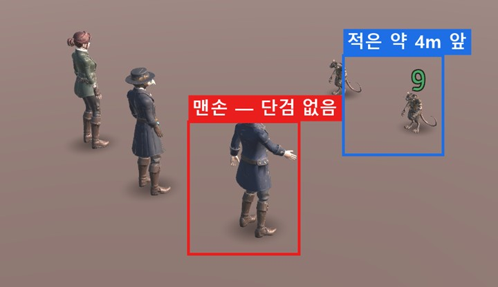
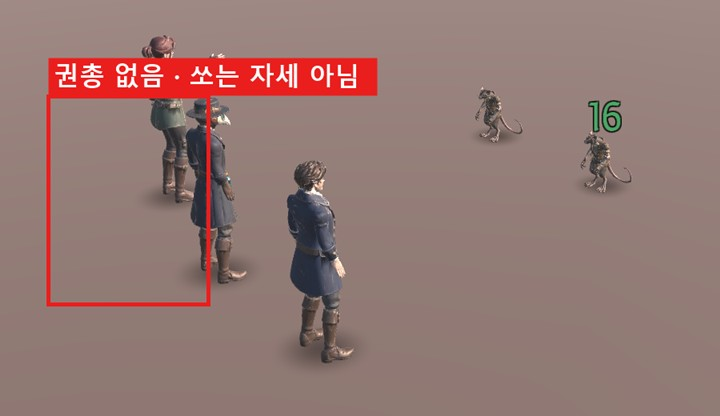
받은 모델 파일을 열어 보니 인물마다 몸 한 덩어리(메시 1개)로만 되어 있고 무기 부품이 없습니다 (파일 안 이름: Meshy_AI_…). 기획서의 무기는 아래와 같습니다.
| 인물 | 무기 | 파일 이름 | 크기·모양 |
|---|---|---|---|
| 명탐정 | 접이식 단검 | Prop_Weapon_Dagger | 길이 약 0.3m. 1774년 런던 느낌의 짧은 칼 |
| 역병 의사 | 검역소 지팡이 | Prop_Weapon_Staff | 길이 약 1.4m. 끝에 장식이 있는 의사 지팡이 |
| 저격수 | 부싯돌 권총 | Prop_Weapon_Pistol | 길이 약 0.4m. 긴 총신의 옛날 권총 |
| 아벨 모로 (보스) | 메스 | Prop_Weapon_Scalpel | 실제보다 크게 약 0.4m (멀리서 보이게, 짐작) |
아래 줄 사진은 받은 동작을 시간대별로 찍은 것. 칸 순서는 모두 같음:


| 인물 | 바라는 공격 |
|---|---|
| 명탐정 | 단검으로 앞을 빠르게 찌르기 (한 발 내딛는 느낌) |
| 저격수 | 권총을 든 팔을 앞으로 쭉 뻗고 쏘기 → 반동으로 팔이 살짝 튐 |
| 아벨 모로 | 메스로 크게 사선 베기 (보스답게 크게) |
공통: 길이 약 1초 · 제자리 · 0.35초쯤 무기가 가장 앞 (게임이 이때 맞음 처리) · 이름 Model_이름@Attack로 교체. 역병 의사 공격(두 팔 들기)은 마법 느낌이라 그대로 둬도 됩니다.


바라는 것: 거미는 앞다리를 들었다 내려찍기, 사냥개는 앞으로 덤벼 물기. 제자리·약 1초·0.35초에 가장 앞.
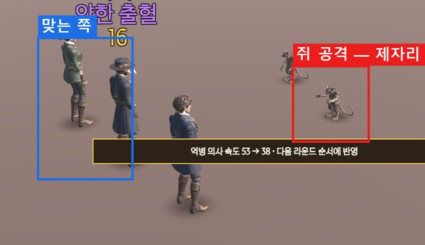


받은 공격 동작은 낫 없이 만든 것이라, 손 위치와 낫이 안 맞습니다. 아래 중 골라 주세요 (11/10 디자인 작업 요청서에서 물었고 아직 답 없음).
| 안 | 누가 | 내용 | 1막 안에 |
|---|---|---|---|
| 가 (추천) | 개발 | Unity에서 낫 쥐는 위치·각도만 조정. 3D 일 없음. 완벽하진 않음 | 가능 |
| 나 | 3D | 낫을 두 손으로 쥐고 크게 휘두르는 사신 전용 공격 새로 만들기 (Model_ShadowReaper@Attack.fbx 교체). 약 1초, 0.3~0.4초쯤 낫이 앞을 지나가게 | 어려움 (짐작) → 1막 뒤 |
낫 크기는 디자인 답(11/10)대로 개발이 Unity에서 조절함 (지금 2.2m). 3D가 할 일 아님.
모두 실제 전투에서 행동을 누른 직후 찍은 화면입니다. 빨간 네모 = 행동한 인물.
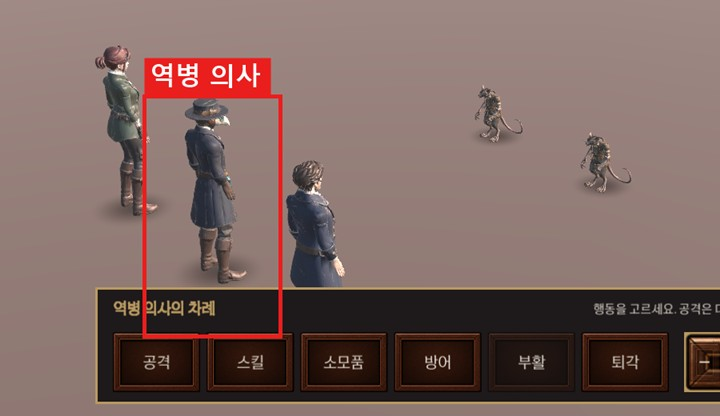
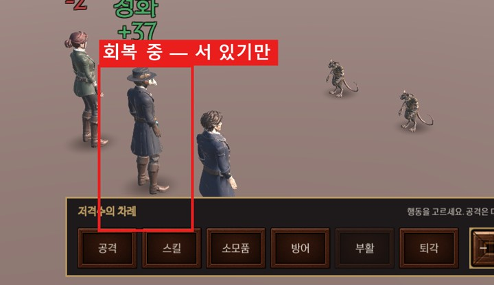
기획 결정(11/10 "회복 B"): 회복 스킬 전용 동작을 디자인에 요청. 받을 때까지는 동작 없음 — 공격 동작을 쓰면 아군을 때리는 것처럼 보여서 뺐습니다.
| 쓰는 곳 | 역병 의사 스킬 2개 — 응급 봉합(HP 회복) · 역병 정화(나쁜 상태 지우기) |
|---|---|
| 모양 | 제자리에서 아군 쪽으로 약·붕대를 내밀거나 뿌리는 느낌. 때리는 모양만 아니면 됨 (세부는 디자인 판단) |
| 길이 | 1~1.5초 · 반복 없음. 시작·끝은 대기 자세와 이어지게 |
| 제자리 | 몸이 앞으로 나가지 않게 (In Place). 앞으로 반 걸음은 게임이 따로 움직임 |
| 뼈대 | 지금 게임의 Model_PlagueDoctor.fbx와 같은 사람형 뼈대 |
| 파일 이름 | Model_PlagueDoctor@Heal.fbx (동작만 있어도 됨) |
| 마감 | 11/12. 오면 개발이 11/14에 연결·확인. 못 오면 1막 뒤로 |
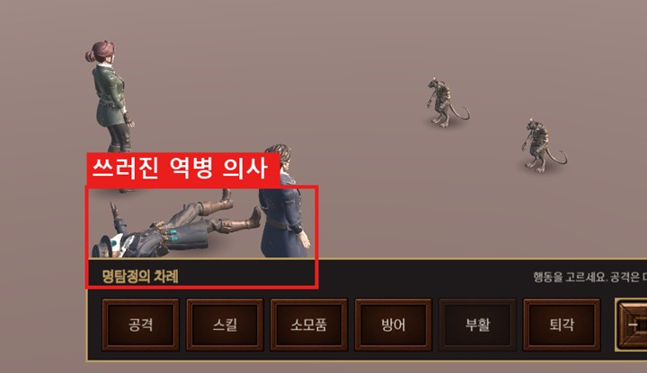
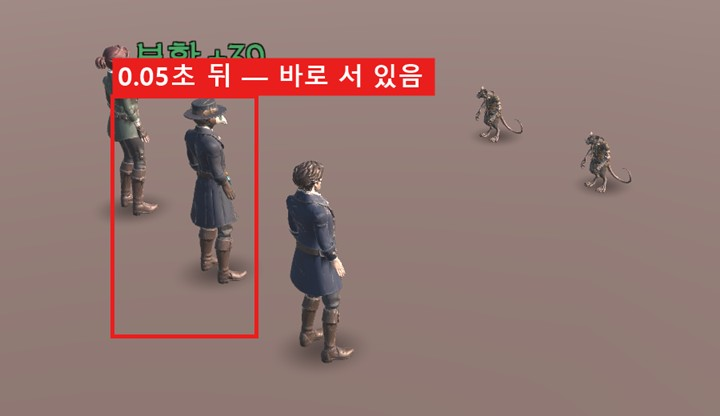
| 파일 이름 | Model_Detective@Revive 1개 (3명이 같이 씀 — 1번 상자 참고) |
|---|---|
| 시작 자세 | 받은 쓰러짐(Death) 동작의 마지막 자세와 같게 (등을 대고 누움, 팔 벌림). 다르면 시작할 때 몸이 튐 |
| 끝 자세 | 대기(Idle) 자세 |
| 길이 | 1~1.5초 · 제자리 · 반복 없음 |
| 느낌 | 한 손을 짚고 비틀거리며 일어남 (짐작 — 디자인 판단) |
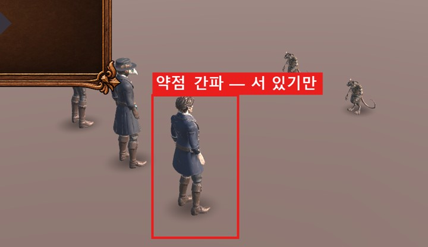
쓰는 곳: 명탐정 약점 간파·장막 걷기, 저격수 영점 조정 (적을 약하게 하거나 자기를 강하게 하는 스킬).
Model_Detective@Skill 1개 · 약 1초 · 손을 들어 집중하거나 가리키는 느낌. 3명 같이 씀.
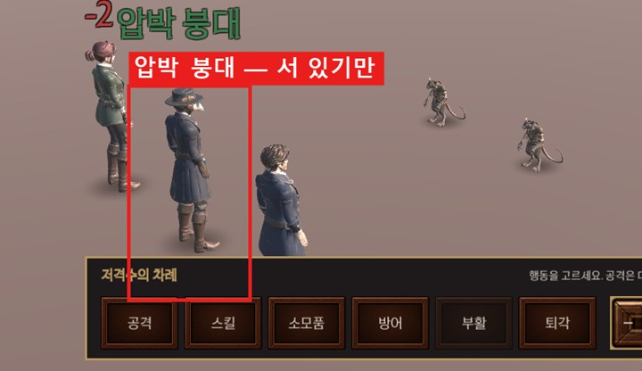
쓰는 곳: 물약·붕대·해독제(자기·동료), 화염병(적 전체).
Model_Detective@Item 1개 · 약 0.8초 · 허리에서 병을 꺼내 마시거나 건네는 느낌. 3명 같이 씀.
화염병 던지기는 따로 만들면 좋지만 3순위 (없으면 위 동작으로 씀).
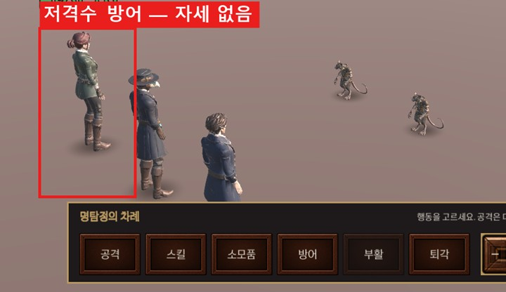
방어는 다음 자기 차례까지 이어집니다.
Model_Detective@Defend 1개 · 약 0.5초 · 팔을 들어 몸을 가리는 자세. 끝 자세로 잠깐 멈췄다가 대기로 돌아와도 됨. 3명 같이 씀.
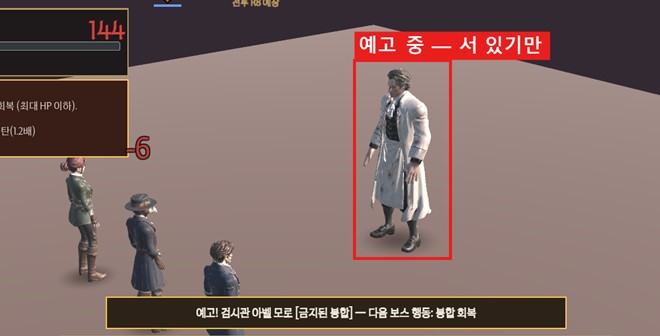
Model_AbelMoreau@Announce · 약 1초 · 메스를 들어 보이며 위협.
Model_AbelMoreau@SelfHeal · 약 1.5초 · 자기 상처를 꿰매는 동작 (HP 60 회복).
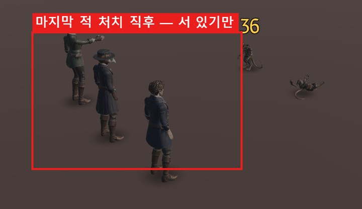
N7 Model_Detective@Dodge · 약 0.5초 · 옆으로 몸을 비킴. 지금은 "MISS"·"회피!" 글자만 뜸 (사진 없음 — 회피는 확률이라 찍지 못함).
N8 Model_Detective@Victory · 1~2초 · 무기를 거두거나 숨을 고르는 짧은 동작. 끝에서 멈춤.

기획 결정 3-2 A: 1막은 걷기 없이 선 자세로 이동. 그래서 1막 마감에는 필요 없습니다.
1막 뒤 요청: Model_Detective@Walk 1개 · 약 1초 반복 · 제자리 걸음 (In Place). 3명 같이 씀. 사신 말(그림자 사신)도 쓰면 좋음 (짐작).
| 내용 | 처리 |
|---|---|
| 퇴각 · 탈출권 | 개발 처리함 (11/11) — 순간 사라지던 것을 "돌아서서 뒤로 물러난 뒤 사라짐"으로 바꿈 (아래 사진) |
| 멀리서 맞음 | 적과 약 4m 떨어져 서 있고, 공격 때 반 걸음(0.6m)만 나감. 서는 간격·나가는 거리는 개발이 조정할 일 |
| 총알·불꽃·베임 효과 | 효과(이펙트)는 1막 뒤 목록 |
| 보드 위 걷기 | 1막은 선 채로 이동 (기획 결정 3-2 A). 걷기 동작은 1막 뒤 3D 요청 → N9 |
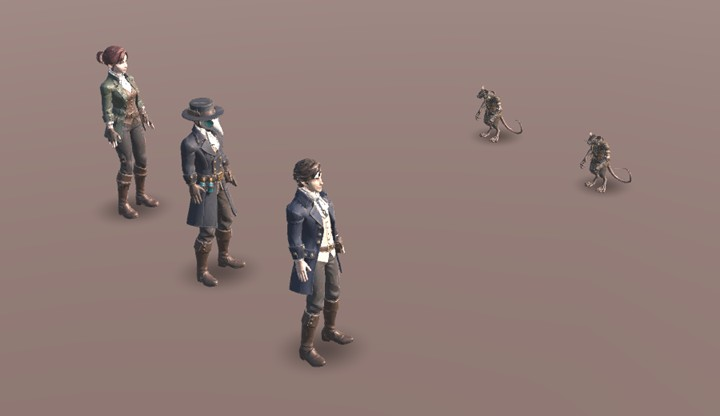
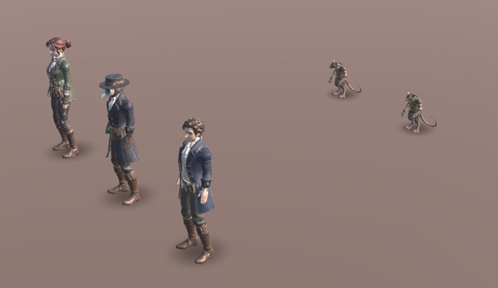
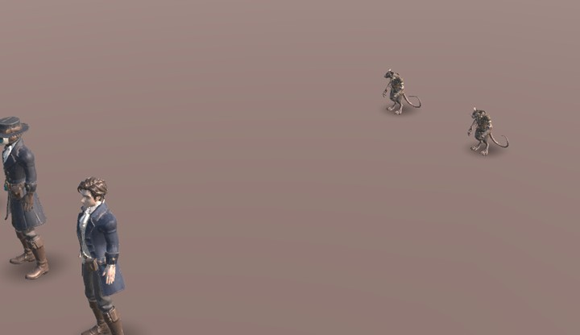
| 파일 | 동작마다 FBX 1개: Model_이름@동작.fbx (예: Model_Detective@Revive.fbx). 무기는 Prop_Weapon_이름.fbx + 텍스처 PNG |
|---|---|
| 뼈대 | 지금 받은 모델과 같은 뼈대 그대로 (다시 리깅하지 않기). 같은 도구(Meshy)에서 동작만 붙여 내보내도 됨 |
| Blender로 내보낼 때 | Apply Transform · Scale 1.0 · Forward −Z · Up Y. 단위가 섞이면 크기가 100배 차이 남 (낫이 2cm로 줄었던 원인). 원본 .blend도 같이 |
| 무게 (무기) | 삼각형 3,000개 이하 · 텍스처 512 (색·Normal) |
| 제자리 | 몸이 앞으로 걸어 나가지 않게 (In Place). 위치는 게임이 움직임 |
| 이어짐 | 시작·끝은 대기 자세와 이어지게. 부활만 시작이 쓰러짐 끝 자세 |
| 보내는 곳 | 원드라이브 판타지아_팀원공유\3D\움직임\ → 개발이 넣고 화면을 찍어 다시 공유 |
| 마감 | 11/12까지 오면 1막에 넣음. 그 뒤는 1막 뒤 |